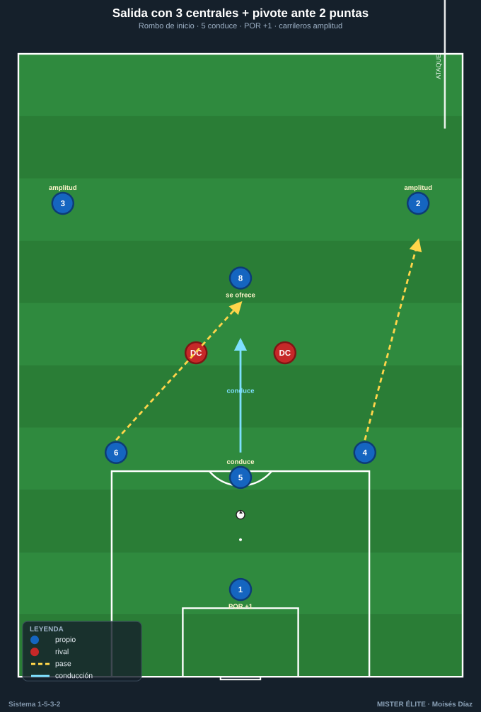
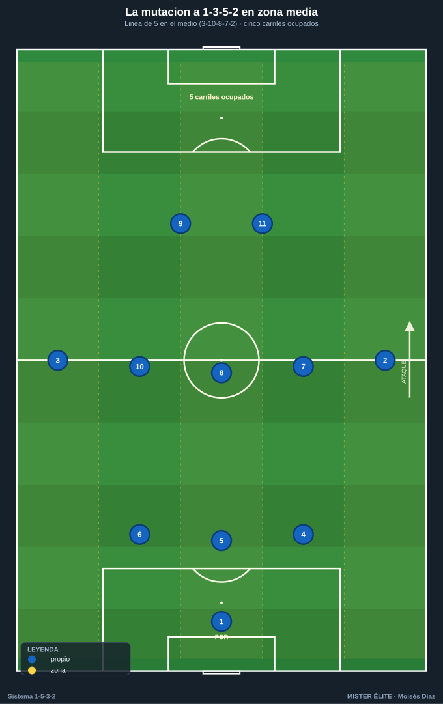
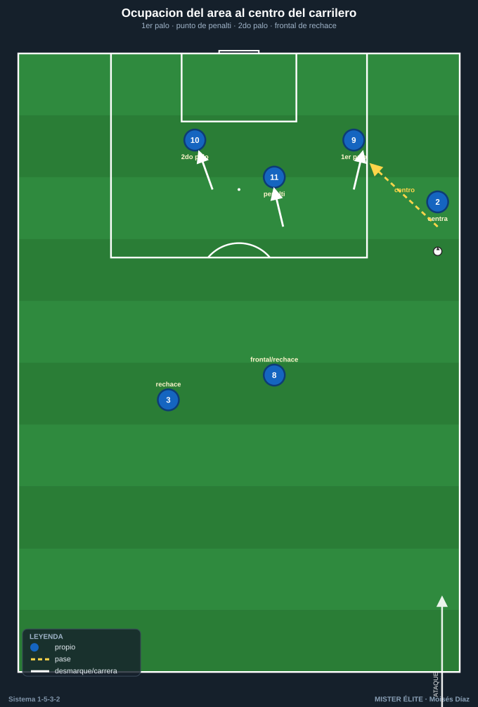
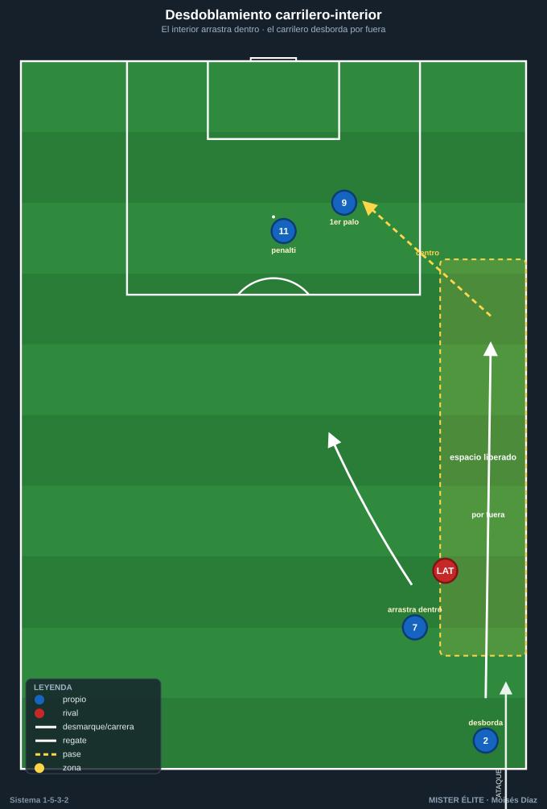

Módulo 03 · Fase ofensiva
Con balón el equipo es un 1-3-5-2: los carrileros suben, atrás quedan 3 centrales y en el medio se forma una línea de 5. Se ataca ancho y largo, sin extremos.
1. Inicio de juego (salida desde atrás)
Estructura base de salida
La salida se construye con los 3 DFC + el pivote (8) formando un rombo por delante del portero:
- Líbero (5) en el centro: recibe del portero y conduce hacia la línea de medios para fijar y romper la primera presión. Es el regulador de la salida.
- DFC laterales (4 y 6) se abren a la altura del área, dando ángulo.
- Pivote (8) se ofrece por delante de los centrales, en el corredor central.
- Carrileros (2 y 3) dan la primera amplitud alta, fijando al primer presor rival.
- POR (1) como +1 permanente: permite jugar al lado contrario del que presiona.
Superioridad numérica según la presión
| Punta(s) rival | Mecanismo | Resultado |
|---|---|---|
| 1 punta | 3 DFC vs 1 → 3v1 | El líbero conduce libre; se progresa por dentro. |
| 2 puntas | 3 DFC vs 2 → 3v2 (+1 portero = 4v2) | Un DFC lateral queda libre y conduce; el 8 da la tercera salida. |
| 2 puntas + 1 MC al pivote | El 8 baja entre los centrales (salida en 4) o el portero juega largo/cambio | Se recupera línea de 3 detrás del balón y el 8 libera al líbero. |

Mecanismos clave de la salida
- El líbero conduce: si nadie le presiona, avanza hasta atraer a un rival y entonces suelta.
- Bajada del pivote (8): baja a formar línea de 3 solo cuando le saltan al hombre; si hay 3v1/3v2 limpio, se queda alto (no quitar un apoyo interior sin necesidad).
- Carrileros como válvula de escape: cuando el centro se cierra, cambio de orientación al carrilero del lado débil con campo por delante.
- Regla anti-pérdida: el DFC del lado contrario al balón nunca sube por encima de la línea del balón → siempre 2 hombres de seguro + portero.
2. Construcción en zona media — la mutación a 1-3-5-2
La subida de los carrileros
Al superar la primera línea, los carrileros (2 y 3) suben a la línea de medios:
- Atrás quedan 3 DFC (4-5-6) sosteniendo la última línea.
- En el medio se forma una línea de 5: CAR (2) – interior (7) – pivote (8) – interior (10) – CAR (3).
- Anchura máxima por ambos lados sin perder el bloque central de 3.

Relación pivote–interiores
- Pivote (8): pivota la circulación, se sitúa en el medio espacio para recibir de cara y dar apoyo de seguridad.
- Interiores (7 y 10): reciben en los medios espacios, perfilados para girar. El 10 (creativo) se asocia con el 11; el 7 (box-to-box) ataca el área.
- Rotaciones: si el interior recibe presión de espaldas, descarga (pared) y se gira al espacio.
- Cambios de orientación: el pivote o el líbero cambian de carrilero a carrilero para mover el bloque rival.
3. Último tercio (creación y finalización)
Amplitud y centros de los carrileros
Son los proveedores naturales de centro: llegan al fondo y ponen el balón al área.
- Tipos de centro: raso al primer palo (para el DC de ruptura), tenso al punto de penalti, atrás (cut-back) a la frontal para el interior.
Desmarques coordinados de los 2 DC
El sistema vive de la complementariedad de los 2 delanteros:
- DC referencia (9): ataca el primer palo / apoyo, fija al central, abre espacio. Hace de ancla ofensiva.
- DC ruptura (11): ataca el espacio a la espalda / segundo palo. Cruza sobre la diagonal del 9.
- Patrón "uno apoya, uno rompe": cuando uno baja a pie, el otro ataca la profundidad. Nunca los dos a la vez.
Llegada de interiores y ocupación del área
- Llegada del interior (sobre todo el 7) desde segunda línea a rematar el cut-back o atacar la frontal: sin marca natural.
- Regla de remate (cada centro): 1er palo (9) – punto de penalti (11) – 2º palo (interior 7/10 lejano) – frontal/rechace (pivote 8 o carrilero lejano).

4. Automatismos clave
- Pared (1-2): interior o punta recibe de espaldas, descarga al pivote/carrilero y se gira al espacio.
- Tercer hombre: el líbero (5) o el pivote (8) juega al interior; este descarga de primeras a un tercer jugador que llega lanzado a la espalda de la línea rival. Mecanismo estrella para progresar entre líneas.
- Desdoblamiento carrilero–interior: el interior arrastra hacia dentro al lateral rival y el carrilero desborda por fuera en el espacio liberado (o a la inversa). El automatismo de banda más importante.
- Llegada desde atrás: el interior box-to-box (7) o un DFC lateral llega en segunda oleada cuando la jugada se trabaja por el lado contrario — sin marca.
- Fijar para liberar: carrilero alto fija al lateral rival → el líbero/pivote cambia al lado débil donde el otro carrilero ataca el 1v1 con campo.

Ideas clave
- La salida explota la superioridad de 3 centrales (3v2 / 4v2); el líbero conduce para fijar y soltar.
- La subida de los carrileros transforma el 1-5-3-2 en 1-3-5-2 y ocupa los cinco carriles.
- El medio espacio es la zona de oro: que los interiores reciban entre líneas, perfilados para girar.
- Los 2 DC se reparten el trabajo: uno apoya, uno rompe — nunca el mismo movimiento.
- En cada centro se ocupan los dos palos + la frontal; el carrilero lejano ataca como un delantero más.
Errores comunes
- Bajar el pivote (8) sin necesidad y quitar un apoyo interior.
- Carrileros que reciben metidos por dentro en vez de pegados a la cal (pierden la amplitud).
- Los dos delanteros haciendo el mismo movimiento (los dos bajan o los dos rompen).
- Centros sin ocupar los puntos del área (falta el segundo palo o la frontal de rechace).
- Subir el DFC del lado contrario por encima del balón y exponer la espalda en transición.